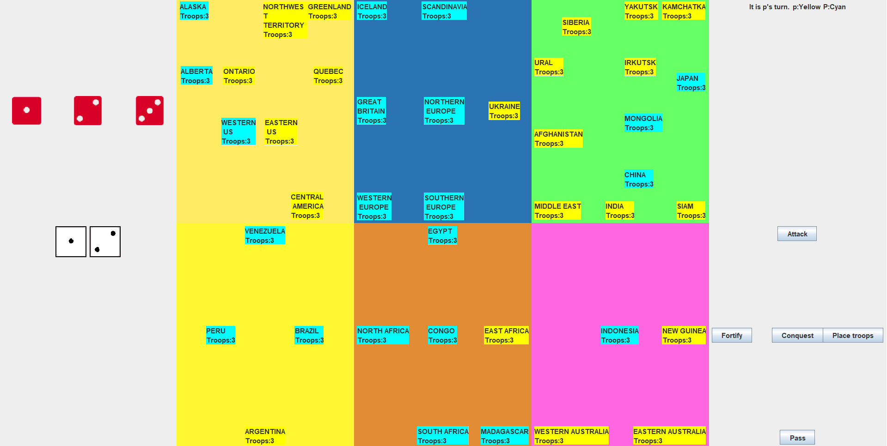
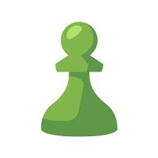

Golan Hassin
Welcome to my website!
Please scroll through to read more about me!
üöó Life
I studied Software Engineering Carleton University and received a Bachelor's Degree after I graduted in April of 2023.
After graduating I decided take some time off and travel on my own. My big trip was driving through the United States and I was able to visit many different and interesting places.


Currently I am now looking for a progamming/developer job. The goal is to be able to use the skills I learned while at school, in a new job and also gain important experience while doing so.
üë®ü誂Äçüíª Projects
Video Poker Project
https://github.com/GolanHassin/Video-Poker-UIThis is a recreation of casino Video Poker.
The project was built in Java with an interactive GUI using Swing. There are methods built to simulate the actual game; therefore, the game allows the user to draw new hands, checks the strength of the hand and dipenses the appropriate payout based on the players hand. I also tested and debugged to ensure the game ran smooth.

“Amazin” Web Store Front
https://github.com/SYSC4806-Group13/SYSC4806-Project This is group project to replicate a small book store.
The project was built in Java it is a virtual bookstore complete with search, filter, checkout and other standard online webstore functionalities. React, REST, Springboot and more are used to make the bookstore possible
Risk board game
I worked on a team of four engineering students to design and implement a GUI for the board game RISK, using Java and important problem-solving skills. An MVC pattern was used to desing and build the project.The user has all the functionality that any user playing Risk would have. This includes fortifying, conquest, pasing and even playing versus AI. 
üéì Education
Carleton University, Ottawa, Ontario
Software Engineering (BEng)Completed degree
Graduated: April 2023
CGPA: 9.69
Lisgar Collegiate Institute, Ottawa, Ontario
Ontario Secondary School Diploma, September 2014- June 2018Graduated with a Silver Medal
Certified Bilingual by earning: Diplôme d’études en langue française (DELF), level B2
üëî Work History
Leonardo DRS
Junior Software Engineer
January 2021 – December 2021, May 2022 - August 2022
The main tasks consisted of taking functionality from legacy software that supported the use of a flight recorder(black box) and intergrating it with the current compnay framework.
Legacy software was written in C++ and the functionality, such as downloading data, then had to be written in Java to intergate the with modern product that was to be shipped ot customers. The job also required using Git/Github, Jira and Confluence to update the work.
In both my terms with Leonardo I trained new Co-op students and helped them integrate with the company environemnt, and get up to speed with the different technologies being used. Finally, I also tested the software on physical hardware pieces in the lab.
 Chess.com
Tester
May 2019 - August 2019
I searched and tested for flaws or bugs in the Chess.com analysis mode on IOS and Windows devices. The testing was conducted based on deadlines and requirements from the team to meet live product release dates. And I openly discussed and submitted testing results with the supervisors via a Slack group.
Thanks for reading!